Requisitos: Tener el arco normal.
Conseguir la flecha de lobos: Tendremos que interactuar con 4 cuadros en un orden específico, los cuadros aparecen de manera aleatorio, pero las ubicaciones son las mismas.
Orden para interactuar:cuadro con dos perros, cuadro con caballo, cuadro con tormenta y cuadro con el hombre muerto.
Localizaciones:
Encontraremos un cuadro en la entrada a la torre del reloj.
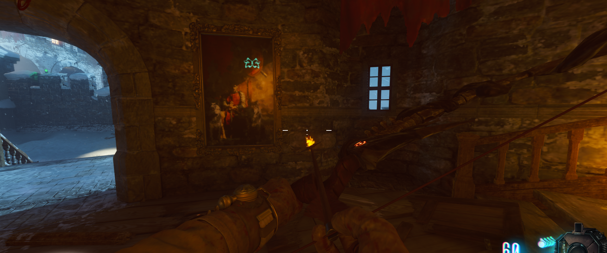
Otro cuadro estará pasando por el cuarto de las estatuas, justo al llegar a las habitaciones.
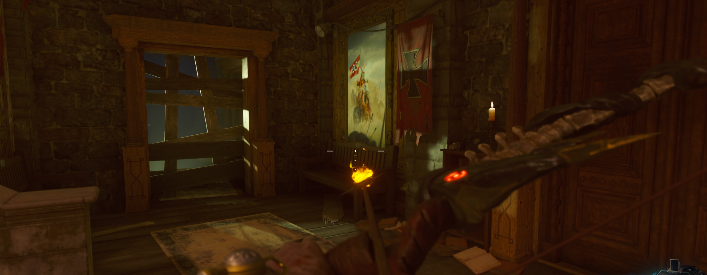
Otro cuadro estará debajo de la torre del reloj, en la habitación del arco oscuro.
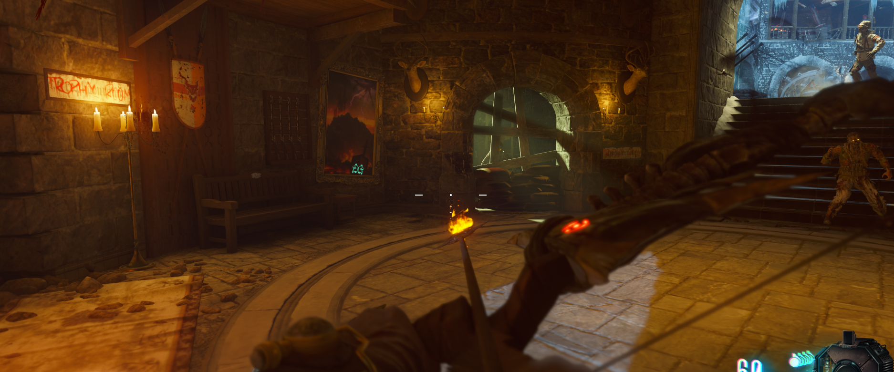
Y el último cuadro estará subiendo las escaleras de la sala del segundo dragón, a la derecha de la entrada principal.
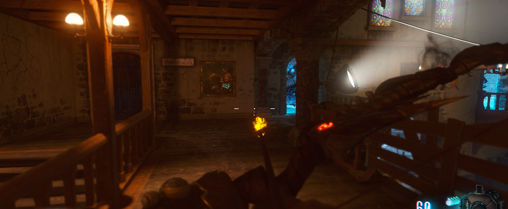
Recoger flecha: Una vez lo hagamos en el oden correcto se oirá el aullido de un lobo y podremos recoger la flecha en la zona de la pirámide.
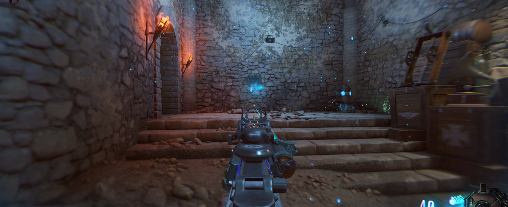
El siguiente paso será acceder a la zona del cohete y disparar a un estandarte rojo que se encuentra en la parte superior. De este caerá un cráneo que tendremos que recoger.
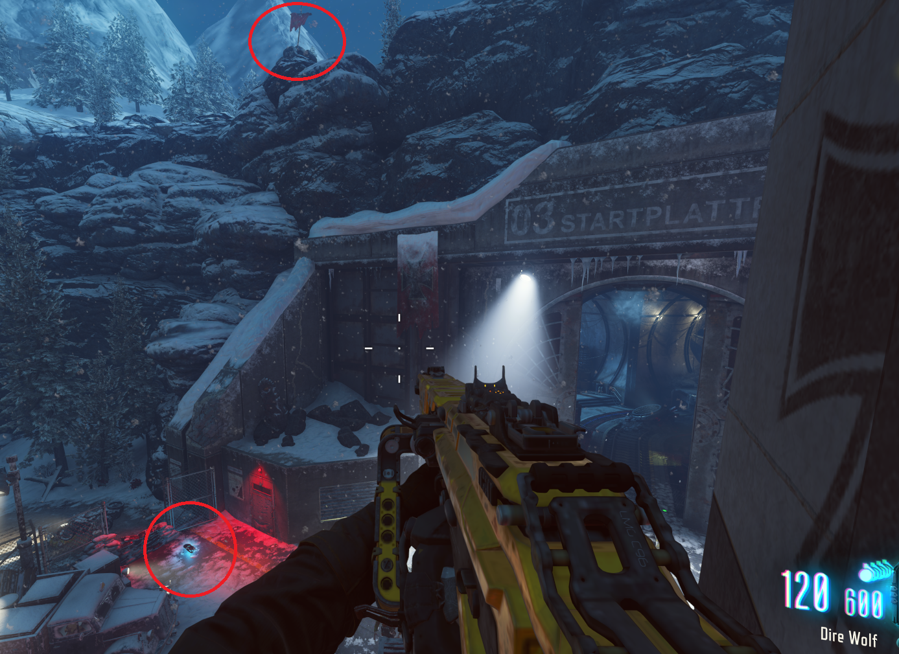
Colocaremos el cráneo en la zona de la pirámide, justo a la derecha del cofre.
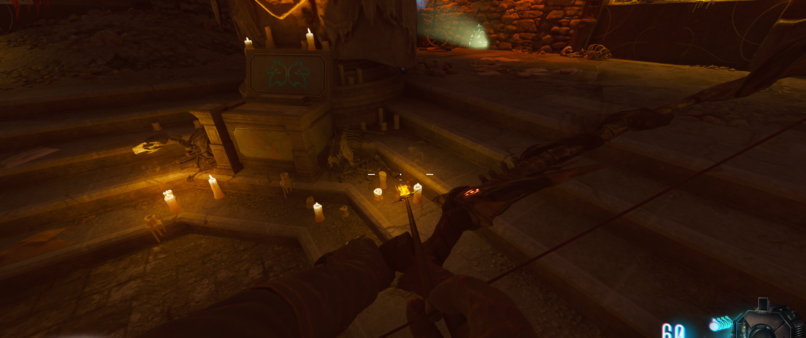
Un espíritu de un lobo saldrá y tendremos que seguirlo.
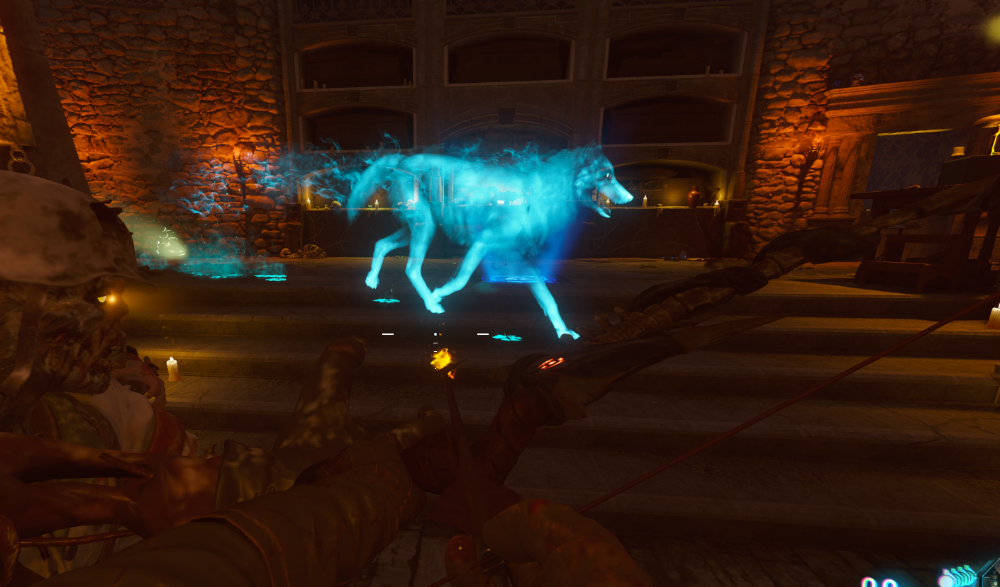
Cargar excavaciones: El lobo se parará en algunos puntos del mapa y se pondrá a escavar. Mataremos zombies alrededor de este, y cuando ya no absorba más almas, recogeremos los huesos del suelo.
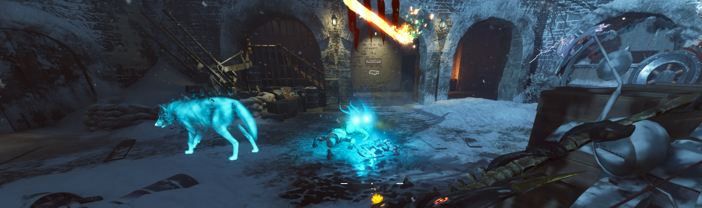
En uno de los puntos el lobo se parará enfrente de esta pared- Tendremos que esperar a que se active la gravedad para disparar al símbolo de dos lobos, mientras corremos por la pared.
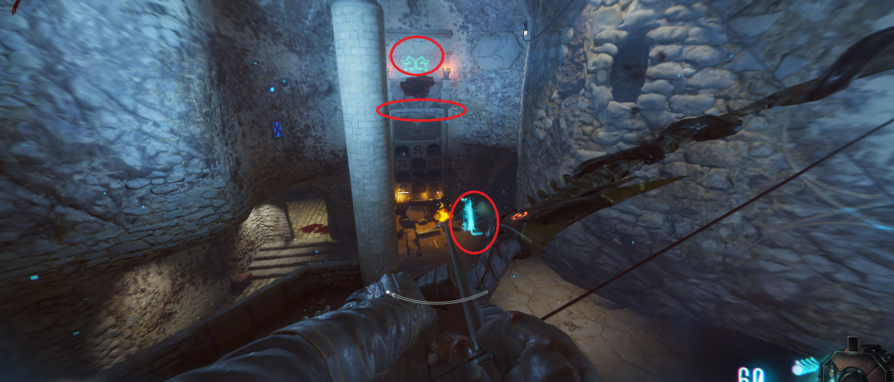
Una plataforma aparecerá en la pared y nos podremos subir a ella. Interactuamos con los huesos y estos nos darán la flecha mejorada.
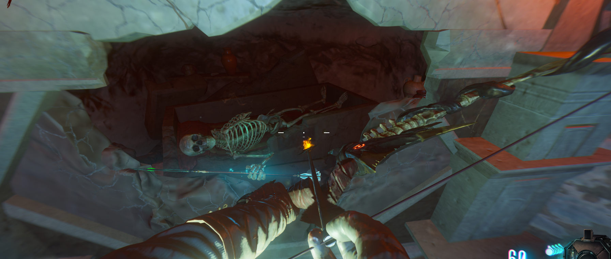
Colocar la flecha: Cuando tengamos la flecha, iremos al cofre de lobos en la zona de la pirámide y la colocaremos.
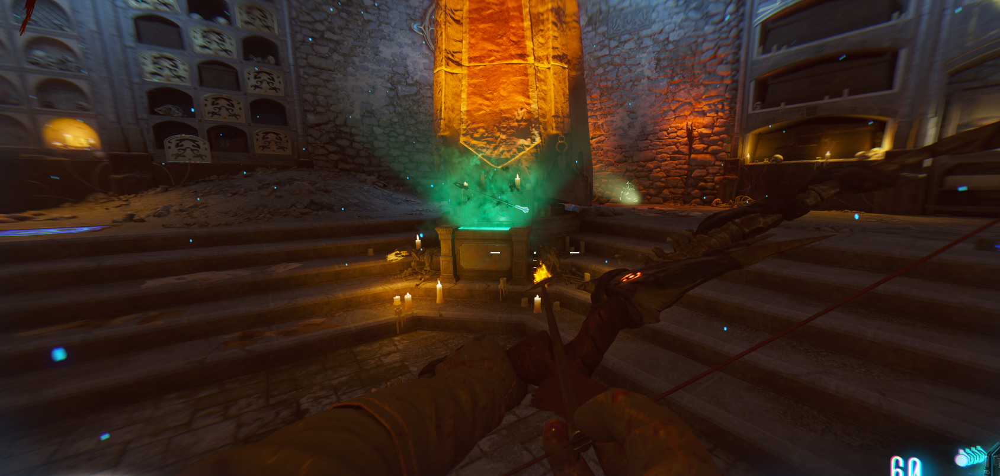
Recoger arco: Cuando terminemos de cargarla con zombies, podremos recoger el arco mejorado.
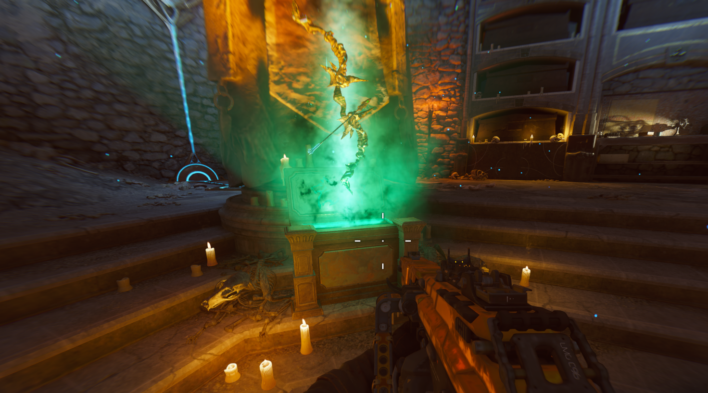